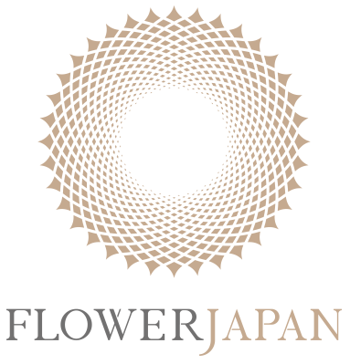
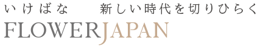
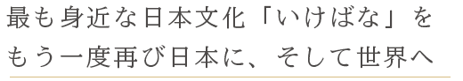

FlowerJapan 事務局
〒108-0074東京都港区高輪3-13-1
グランドプリンスホテル新高輪1F IKEBANA ATRIUM内
TEL / FAX 03-3444-8744



Flower Japan は、
日本文化である「いけばな」を軸に、
より豊かなライフスタイルを、日本に、世界に、次世代へと伝え
創出していくプロジェクトです。
「いけばな」を問う。
古来よりなぜ人は花をいけ、今も文化として伝えられているのか。
武士が嗜み、植物に想いを託してきた「いけばな」は、
現在のビジネスにも繋がります。
「いけばな」がもつ精神は、日本文化すべての根幹を形成する
おおきな力であり姿勢です。
日本文化であり、世界に誇る花文化「いけばな」を、
FlowerJapanというプロジェクトとして、
今後もさまざまなアプローチで発信して参ります。


日本の素晴らしい文化の一つである「いけばな」とは、花をきれいにいけることだけでは
ありません。昔から私たちの生活と共にあり、私たちは「いけばな」から日本人ならではの
精神と美を育み、身につけてきました。
多くの家庭に花が飾られ、いけばなから「季節感」や「安らぎ」を感じ、子供達は、
生き物がもつ「命の尊さ」や「力強さ」を知り、客人は、家人の「おもてなしの気持ち」に
触れることができました。そして自然に「美意識」「思いやり」「おもてなしの心」
「察する気持ち」「こまやかな心使い」等たくさんのこころを根付かせてきました。
このプロジェクトは、日本の素晴らしい文化の一つである「いけばな」を通し、
より豊かな日本を作り上げるという夢を実現していきます。
日本人が日本人であるための資質に溢れた美意識を
「いけばな」から学び、もう一度日本に、世界にそして
次世代に伝え、より豊かな世界の実現をめざします。
豊かな自然と四季に恵まれた日本人の独自の感性、美意識、
心を持ち続けるために、いけばなは必要です。
最も身近な生活文化でもあり、世界にわかりやすく
日本の心を伝えられる文化でもあります。
植物には命があります。いけ手は植物と向き合い、語り合い、
対峙する。床の間に飾られていた様式美の「いけばな」から、
現在は、床の間を飛び出し、植物との対話のなかで新たな美が
吹き込まれ、多様な空間にあわせた表現もしています。
供える花、祈りでもある花から、見る人を楽しませ、
癒し、もてなす花の表現へと変容。
現代アートや空間デザインとして評価を受ける「いけばな」も
誕生しています。“いける”とは、対話であり、
創造であり、気遣いであり、そして、自己表現です。
世界に誇れる文化のひとつ「いけばな」が、
諸外国に広がる一方で、日本における文化としては
縮小に向かっています。少子高齢化、核家族化により、
これまで自然に家庭の中で受け継がれてきた「いけばな」
文化は薄れ、「いけばな」を当たり前に親しんできた世代は
高齢になり次世代に繋ぐ機会がなく、途切れてしまう
心配があります。
「いけばな」によって自然と育まれてきた
日本人ならではのアイデンティティや美意識を
しっかりと次世代に繋いでいきます。